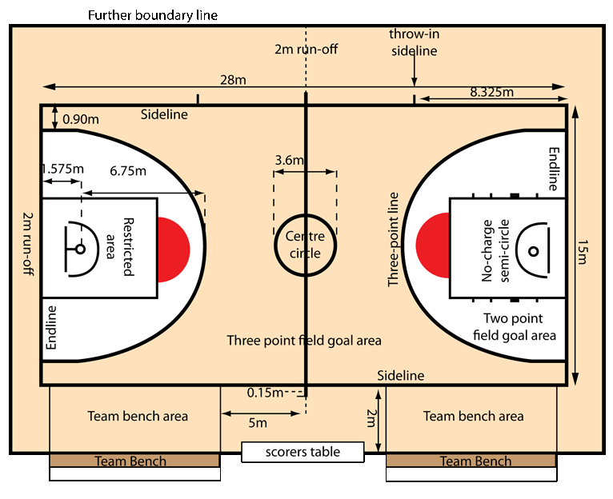
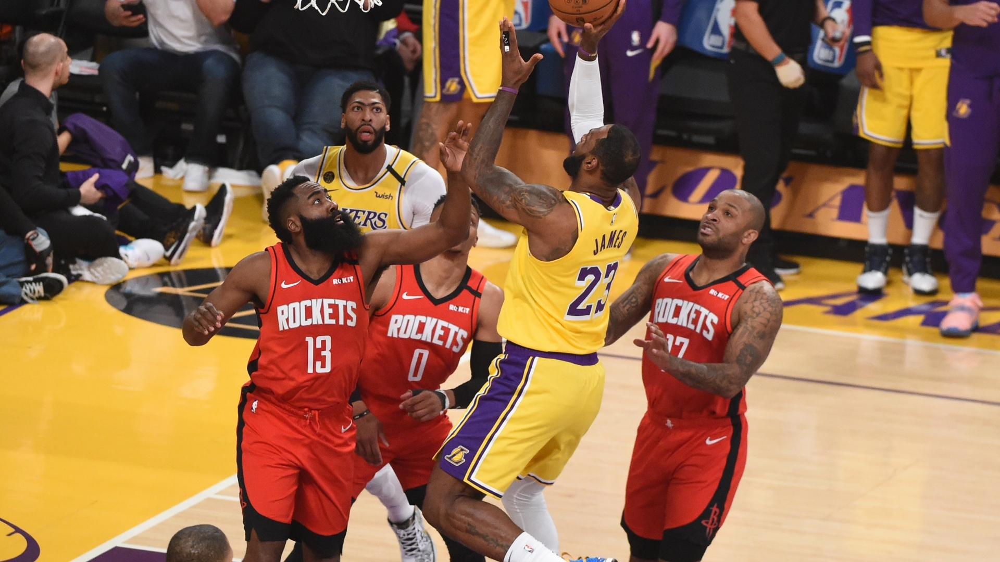

the basketball brief introduction
Basketball was invented by American James Naismith in 1891. At the time, he taught at the YMCA International Training School in Springfield, Massachusetts. Due to the local rich peach, the children here also like to play the game of putting the ball into the peach basket. This inspired him to create basketball games based on the characteristics of football, hockey and other ball games.
At first, the basketball game was relatively simple, with no limit on the size of the court and the number of players. After the referee throws the ball to the center of the court, the players of both sides immediately rush into the court to grab the ball and try to throw the ball into the other side's basket. Because the peach basket is bottomed, the ball will stay in the basket after hitting, and people must climb the special ladder to take the ball out of the basket.
With the continuous improvement of the court facilities, the bottom of the basket has been canceled, and the iron hoop has been used instead of the peach basket, the wooden board has been used instead of the wire fence, the center line, the middle circle and the free throw line have been added in the court, and the game has started from the midfield jump. At the same time, the players in the game are usually changed to 5 players in each team, and they are divided into guard, guard, center, forward and left behind positions. In addition, Naismith formulated an imperfect competition rule, including 13 clauses, in which it is not allowed to run with the ball, hold people, push people, trip people, hit people and so on. This greatly improved the fun of the basketball game, and attracted more people to participate in the game, so that basketball soon spread to the United States.
back |

In 1892, basketball was first introduced to Mexico from the United States, and it was soon carried out all over Mexico. In this way, Mexico became the first country outside the United States to develop basketball. Since then, the sport has been introduced to France, Britain, China, Brazil, Czechoslovakia, Australia, Lebanon and other countries, and has been carried out, popularized and developed in the world.
In 1895, American Bob geley introduced basketball to China. In 1896, Tianjin YMCA held China's first basketball game performance. After that, it was carried out in the youth associations of Tianjin, Beijing and other cities. In 1910, basketball was listed as a performance item for the first time in the first National Games of old China. In the second National Games in 1914, basketball was listed as a formal competition for men, and in the third National Games in 1924, it was listed as a formal competition for women. Since 1951, basketball has been an official event in the Asian Games.
In 1932, the International Amateur Basketball Federation was founded, and the men's basketball was promoted
basketball match
basketball match
The International Olympic Committee recognizes it as an official event of the Olympic Games. In 1946, professional basketball league appeared in America and developed into NBA.
Women's basketball didn't develop until the beginning of the 20th century. In 1976, women's basketball was listed as an official event of the Olympic Games. |